소방설비기사(전기분야) (2016-05-08 기출문제)
1과목: 소방원론
1. 위험물안전관리법상 위험물의 지정수량이 틀린것은?
- 과산화나트륨 - 50kg
- 적린 - 100kg
- 트리니트로톨루엔 - 200kg
- 탄화알루미늄 - 400kg
(정답률: 68%)

2. 블레비(BLEVE) 현상과 관계가 없는 것은?
- 핵분열
- 가연성액체
- 화구(Fire ball)의 형성
- 복사열의 대량 방출
(정답률: 84%)
3. 화재 발생 시 인간의 피난 특성으로 틀린 것은?
- 본능적으로 평상시 사용하는 출입구를 사용한다.
- 최초로 행동을 개시한 사람을 따라서 움직인다.
- 공포감으로 인해서 빛을 피하여 어두운 곳으로 몸을 숨긴다.
- 무의식 중에 발화 장소의 반대쪽으로 이동한다.
(정답률: 95%)
4. 에스테르가 알칼리의 작용으로 가수분해 되어 알코올과 산의 알칼리염이 생성되는 반응은?
- 수소화 분해반응
- 탄화반응
- 비누화반응
- 할로겐화반응
(정답률: 79%)
5. 건축물이 내화구조 바닥이 철근콘크리트조 또는 철골철근콘크리트조인 경우 두께가 몇 cm 이상이어야 하는가?
- 4
- 5
- 7
- 10
(정답률: 84%)
6. 스테판-볼쯔만의 법칙에 의해 복사열과 절대온도와의 관계를 옳게 설명한 것은?
- 복사열은 절대온도의 제곱에 비례한다.
- 복사열은 절대온도의 4제곱에 비례한다.
- 복사열은 절대온도의 제곱에 반비례한다.
- 복사열은 절대온도의 4제곱에 반비례한다.
(정답률: 86%)
7. 물을 사용하여 소화가 가능한 물질은?
- 트리메틸알루미늄
- 나트륨
- 칼륨
- 적린
(정답률: 76%)
8. 연쇄반응을 차단하여 소화하는 약제는?
- 물
- 포
- 할론 1301
- 이산화탄소
(정답률: 86%)
9. 화재의 종류에 따른 표시 색 연결이 틀린 것은?
- 일반화재 - 백색
- 전기화재 - 청색
- 금속화재 - 흑색
- 유류화재 - 황색
(정답률: 84%)
10. 제4류 위험물의 화재시 사용되는 주된 소화방법은?
- 물을 뿌려 냉각한다.
- 연소물을 제거한다.
- 포를 사용하여 질식 소화한다.
- 인화점 이하로 냉각한다.
(정답률: 82%)
11. 화씨 95도를 켈빈(Kelvin)온도로 나타내면 약 몇 K인가?
- 178
- 252
- 308
- 368
(정답률: 63%)
12. 소화기구는 바닥으로부터 높이 몇 m 이하의 곳에 비치하여야 하는가? (단, 자동소화장치를 제외한다.)
- 0.5
- 1.0
- 1.5
- 2.0
(정답률: 71%)
13. 증발잠열을 이용하여 가연물의 온도를 떨어뜨려 화재를 진압하는 소화방법은?
- 제거소화
- 억제소화
- 질식소화
- 냉각소화
(정답률: 91%)
14. 폭굉(Detonation)에 관한 설명으로 틀린 것은?
- 연소속도가 음속보다 느릴 때 나타난다.
- 온도의 상승과 충격파의 압력에 기인한다.
- 압력상승은 폭연의 경우보다 크다.
- 폭굉의 유도거리는 배관의 지름과 관계가 있다.
(정답률: 86%)
15. 제1종 분말 소화약제의 열분해 반응식으로 옳은 것은?
- 2NaHCO3 → Na2CO3 → CO2 → H2O
- 2KHCO3 → K2CO3 → CO2 → H2O
- 2NaHCO3 → Na2CO3 → 2CO2 → H2O
- 2KHCO3 → K2CO3 → 2CO2 → H2O
(정답률: 71%)
16. 굴뚝효과에 관한 설명으로 틀린 것은?
- 건물내ㆍ외부의 온도차에 따른 공기의 흐름현상이다.
- 굴뚝효과는 고층건물에서는 잘 나타나지 않고 저층건물에서 주로 나타난다.
- 평상시 건물 내의 기류분포를 지배하는 중요요소이며 화재 시 연기의 이동에 큰 영향을 미친다.
- 건물외부의 온도가 내부의 온도보다 높은 경우 저층부에서는 내부에서 외부로 공기의 흐름이 생긴다.
(정답률: 88%)
17. 분말소화약제 중 담홍색 또는 황색으로 착색하여 사용하는 것은?
- 탄산수소나트륨
- 탄산수소칼륨
- 제1인산암모늄
- 탄산수소칼륨과 요소와의 반응물
(정답률: 80%)
18. 화재 및 폭발에 관한 설명으로 틀린 것은?
- 메탄가스는 공기보다 무거우므로 가스 탐지부는 가스기구의 직하부에 설치한다.
- 옥외저장탱크의 방유제는 화재 시 화재의 확대를 방지하기 위한 것이다.
- 가연성 분진이 공기 중에 부유하면 폭발할 수도 있다.
- 마그네슘의 화재 시 주수 소화는 화재를 확대할 수 있다.
(정답률: 81%)
19. 위험물에 관한 설명으로 틀린 것은?
- 유기금속화합물인 사에틸납은 물로 소화할 수 없다.
- 황린은 자연발화를 막기 위해 통상 물 속에 저장한다.
- 칼륨, 나트륨은 등유 속에 보관한다.
- 유황은 자연발화를 일으킬 가능성이 없다.
(정답률: 48%)
20. 알킬알루미늄 화재에 적합한 소화약제는?
- 물
- 이산화탄소
- 팽창질석
- 할로겐화합물
(정답률: 86%)
2과목: 소방전기회로
21. 제어계가 부정확하고 신뢰성은 없으나 출력과 입력이 서로 독립인 제어계는?
- 자동 제어계
- 개회로 제어계
- 폐회로 제어계
- 피드백 제어계
(정답률: 70%)
22. 제어량을 어떤 일정한 목표값으로 유지하는 것을 목적으로 하는 제어방식은?
- 정치 제어
- 추종 제어
- 프로그램 제어
- 비율 제어
(정답률: 75%)
23. 서로 다른 두 개의 금속도선 양끝을 연결하여 폐회로를 구성한 후, 양단에 온도차를 주었을 때 두 접점사이에서 기전력이 발생하는 효과는?
- 톰슨 효과
- 제어백 효과
- 펠티에 효과
- 펀치 효과
(정답률: 59%)
24. 일정전압의 직류전원에 저항을 접속하고 전류를 흘릴 때 전류의 값을 20% 감소시키기 위한 저항값은 처음의 몇 배인가?
- 0.⑤
- 0.83
- 1.25
- 1.5
(정답률: 69%)
25. 제어량을 조절하기 위하여 제어 대상에 주어지는 양으로 제어부의 출력이 되는 것은?
- 제어량
- 주 피드백신호
- 기준입력
- 조작량
(정답률: 72%)
26. 변압기의 내부회로 고장검출용으로 사용되는 계전기는?
- 비율차동계전기
- 과전류계전기
- 온도계전기
- 접지계전기
(정답률: 83%)
27. 단상 반파정류회로에서 출력되는 전력은?
- 입력전압의 제곱에 비례한다.
- 입력전압에 비례한다.
- 부하저항에 비례한다.
- 부하임피던스에 비례한다.
(정답률: 49%)
28. 100Ω인 저항 3개를 같은 전원에 △결선으로 접속할 때와 Y 결선으로 접속할 때, 선전류의 크기의 비는?
- 3
- 1/3
- √3
- 1/√3
(정답률: 42%)
29. 한 조각의 실리콘 속에 많은 트랜지스터, 다이오드, 저항 등을 넣고 상호배선을 하여 하나의 회로에서의 기능을 갖게 한 것은?
- 포토 트랜지스터
- 서미스터
- 바리스터
- IC
(정답률: 81%)
30. 변류기에 결선된 전류계가 고장이 나서 교환하는 경우 옳은 방법은?
- 변류기의 2차를 개방시키고 한다.
- 변류기의 2차를 단락시키고 한다.
- 변류기의 2차를 접지시키고 한다.
- 변류기에 피뢰기를 달고 한다.
(정답률: 84%)
31. 단상변압기 권수비 a = 8이고, 1차 교류전압은 110V 이다. 변압기 2차 전압을 단상 반파 정류회로를 이용하여 정류했을 때 발생하는 직류전압의 평균치는 약 몇 V 인가?
- 6.19
- 6.29
- 6.39
- 6.88
(정답률: 58%)
32. 전류에 의한 자계의 세기를 구하는 법칙은?
- 쿨롱의 법칙
- 페러데이의 법칙
- 비오사바르의 법칙
- 렌츠의 법칙
(정답률: 57%)
33. 공기 중에 1×10-7C의 (+)전하가 있을 때, 이 전하로부터 15cm의 거리에 있는 점의 전장의 세기는 몇 V/m 인가?
- 1×104
- 2×104
- 3×104
- 4×104
(정답률: 57%)
34. 선간전압 E[V]의 3상 평형전원에 대칠 3상 저항부하 R[Ω]이 그림과 같이 접속되었을 때 a, b 두 상간에 접속된 전력계의 지시값이 W[W]라면 C상의 전류는 몇 A 인가?
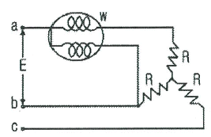
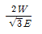
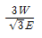
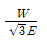
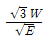
(정답률: 70%)
35. 그림과 같은 회로에서 2Ω에 흐르는 전류는 몇 A인가? (단, 저항의 단위는 모두 Ω이다.)
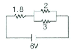
- 0.8
- 1.0
- 1.2
- 2.0
(정답률: 63%)
36. 논리식 Xㆍ(X+Y)를 간략화 하면?
- X
- Y
- X+Y
- XㆍY
(정답률: 68%)
37. 단상 변압기 3대를 △결선하여 부하에 전력을 공급하고 있는데, 변압기 1대의 고장으로 V결선을 한 경우 고장 전의 몇 % 출력을 낼 수 있는가?
- 51.6
- 53.6
- 55.7
- 57.7
(정답률: 75%)
38. 그림과 같은 다이오드 논리회로의 명칭은?
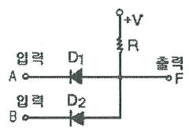
- NOT 회로
- AND 회로
- OR 회로
- NAND 회로
(정답률: 71%)
39. i=50sin⍵t인 교류전류의 평균값은 약 몇 A 인가?
- 25
- 31.8
- 35.9
- 50
(정답률: 63%)
40. 그림과 같은 계전기 접점회로를 논리식으로 나타내면?
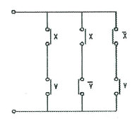
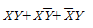
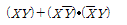
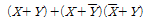
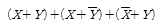
(정답률: 78%)
3과목: 소방관계법규
41. 연소 우려가 있는 건축물의 구조에 대한 기준중 다음 보기 (㉠),(㉡)에 들어갈 수치로 알맞은 것은?
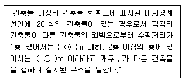
- ㉠5, ㉡ 10
- ㉠6, ㉡ 10
- ㉠10, ㉡ 5
- ㉠10, ㉡ 6
(정답률: 66%)
42. 위험물 제조소에서 저장 또는 취급하는 위험물에 따른 주의사항을 표시한 게시판 중 화기엄금을 표시하는 게시판의 바탕색은?
- 청색
- 적색
- 흑색
- 백색
(정답률: 69%)
43. 다음 중 자동화재탐지설비를 설치해야 하는 특정소방대상물은?
- 길이가 1.3km 인 지하가 중 터널
- 연면적 600m2인 볼링장
- 연면적 500m2인 산후조리원
- 지정수량 100배의 특수가연물을 저장하는 창고
(정답률: 67%)
44. 소방요수시설 중 저수조 설치 시 지면으로부터 낙차 기준은?
- 2.5m 이하
- 3.5m 이하
- 4.5m 이하
- 5.5m 이하
(정답률: 86%)
45. 소방시설업 등록사항의 변경신고 사항이 아닌 것은?
- 상호
- 대표자
- 보유설비
- 기술인력
(정답률: 71%)
46. 다음 중 그 성질이 자연발화성 물질 및 금수성물질인 제3류 위험물에 속하지 않는 것은?
- 황린
- 황화린
- 칼륨
- 나트륨
(정답률: 72%)
47. 옥내주유취급소에 있어서 당해 사무소 등의 출입구 및 피난구와 당해 피난구로 통하는 통로ㆍ계단 및 출입구에 설치해야 하는 피난설비는?
- 유도등
- 구조대
- 피난사다리
- 완강기
(정답률: 82%)
48. 완공된 소방시설 등의 성능시험을 수행하는 자는?
- 소방시설공사업자
- 소방공사감리업자
- 소방시설설계업자
- 소방기구제조업자
(정답률: 84%)
49. 소방본부장 또는 소방서장이 소방특별조사를 하고자 하는 때에는 며칠 전에 관계인에게 서면으로 알려야 하는가?
- 1일
- 3일
- 5일
- 7일
(정답률: 77%)
50. 소방시설공사업자가 소방시설공사를 하고자 하는 경우 소방시설공사 착공신고서를 누구에게 제출해야 하는가?
- 시ㆍ도지사
- 국민안전처장관
- 한국소방시설협회장
- 소방본부장 또는 소방서장
(정답률: 61%)
51. 소방의 역사와 안전문화를 발전시키고 국민의 안전위식을 높이기 위하여 ㉠소방박물관과 ㉡소방체험관을 설립 및 운영할 수 있는 사람은?
- ㉠ : 소방청장, ㉡ : 소방청장
- ㉠ : 소방청장, ㉡ : 시ㆍ도지사
- ㉠ : 시ㆍ도지사, ㉡ : 시ㆍ도지사
- ㉠ : 소방본부장, ㉡ : 시ㆍ도지사
(정답률: 76%)
52. 다음 중 위험물별 성질로서 틀린 것은?
- 제1류 : 산화성 고체
- 제2류 : 가연성 고체
- 제4류 : 인화성 액체
- 제6류 : 인화성 고체
(정답률: 84%)
53. 도시의 건물 밀집지역 등 화재가 발생할 우려가 높거나 화재가 발생하는 경우 그로 인하여 피해가 클 것으로 예상되는 일정한 구역을 화재경계지구로 지정할 수 있는 권한을 가진 사람은?
- 시ㆍ도지사
- 국민안전처장관
- 소방서장
- 소방본부장
(정답률: 81%)
54. 1급 소방안전관리대상물의 소방안전관리에 관한 시험응시 자격자의 기준으로 옳은 것은?(관련 규정 개정전 문제로 여기서는 기존 정답인 3번을 누르면 정답 처리됩니다. 자세한 내용은 해설을 참고하세요.)
- 1급 소방안전관리대상물의 소방안전관리에 관한 강습교육을 수료한 후 1년이 경과되지 아니한 자
- 1급 소방안전관리대상물의 소방안전관리에 관한 강습교육을 수료한 후 1년 6개월이 경과되지 아니한 자
- 1급 소방안전관리대상물의 소방안전관리에 관한 강습교육을 수료한 후 2년이 경과되지 아니한 자
- 1급 소방안전관리대상물의 소방안전관리에 관한 강습교육을 수료한 후 3년이 경과되지 아니한 자
(정답률: 68%)
55. 화재예방, 소방시설 설치ㆍ유지 및 안전관리에 관한 법률상 소방시설 등에 대한 자체점검 중 종합정밀점검 대상기준으로 옳지 않은 것은?(2021년 07월 12일 개정된 규정 적용됨)
- 제연설비가 설치된 터널
- 노래연습장으로서 연면적이 2000m2 이상인 것
- 물분무등소화설비가 설치된 아파트로서 연면적 3000m2이상이고 11층 이상인 것
- 소방대가 근무하지 않는 국공립학교 중 연면적이 1000m2이상인 것으로서 자동화재탐지설비가 설치된 것
(정답률: 45%)
56. 보일러 등의 위치ㆍ구조 및 관리와 화재예방을 위하여 불의 사용에 있어서 지켜야 하는 사항 중 보일러에 경유ㆍ등유 등 액체연료를 사용하는 경우에 연료탱크는 보일러 본체로부터 수평거리 최소 몇 m 이상의 간격을 두어 설치해야 하는가?
- 0.5
- 0.6
- 1
- 2
(정답률: 58%)
57. 위력을 사용하여 출동한 소방대의 화재진압ㆍ인명구조 또는 구급활동을 방해하는 행위를 한 자에 대한 벌칙 기준은?(관련 규정 개정전 문제로 여기서는 기존 정답인 4번을 누르면 정답 처리됩니다. 자세한 내용은 해설을 참고하세요.)
- 200만원 이하의 벌금
- 300만원 이하의 벌금
- 3년 이하의 징역 또는 1500만원 이하의 벌금
- 5년 이하의 징역 또는 3000만원 이하의 벌금
(정답률: 82%)
58. 형식승인을 얻어야 할 소방용품이 아닌 것은?
- 감지기
- 휴대용 비상조명등
- 소화기
- 방염액
(정답률: 79%)
59. 특정소방대상물의 근린생활시설에 해당되는 것은?
- 전시장
- 기숙사
- 유치원
- 의원
(정답률: 69%)
60. 신축ㆍ증축ㆍ개축ㆍ재축ㆍ대수선 또는 용도변경으로 해당 특정소방대상물의 소방안전관리자를 신규로 선임하는 경우 해당 특정소방대상물의 관계인은 특정소방대상물의 완공일로부터 며칠 이내에 소방안전관리자를 선임하여야 하는가?
- 7일
- 14일
- 30일
- 60일
(정답률: 77%)
4과목: 소방전기시설의 구조 및 원리
61. 무선통신보조설비의 화재안전기준에서 사용하는 용어의 정의로 옳은 것은?
- 혼합기는 신호의 전송로가 분기되는 장소에 설치하는 장치를 말한다.
- 분배기는 서로 다른 주파수의 합성된 신호를 분리하기 위해서 사용하는 장치를 말한다.
- 증폭기는 두 개 이상의 입력 신호를 원하는 비율로 조합한 출력이 발생되도록 하는 장치를 말한다.
- 누설동축케이블은 동축케이블 외부도체에 가느다란 홈을 만들어서 전파가 외부로 새어나갈 수 있도록 한 케이블을 말한다.
(정답률: 75%)
62. 자동화재속보설비 속보기의 예비전원을 병렬로 접속하는 경우 필요한 조치는?
- 역충전 방지 조치
- 자동 직류전환 조치
- 계속충전 유지조치
- 접지 조치
(정답률: 86%)
63. 비상벨설비 또는 자동식사이렌설비에 사용하는 벨 등의 음향장치의 설치기준이 틀린 것은?
- 음향장치용 전원은 교류전압의 옥내간선으로 하고 배선은 다른 설비와 겸용으로 할 것
- 음향장치는 정격전압의 80% 전압에서 음향을 발할 수 있도록 할 것
- 음향장치의 음량은 부착된 음향장치의 중심으로부터 1m 떨어진 위치에서 90dB 이상일 것
- 지구음향장치는 특정소방대상물의 층마다 설치하되, 해당 특정소방대상물의 각 부분으로부터 하나의 음향장치까지의 수평거리가 25m 이하가 되도록 할 것
(정답률: 83%)
64. 비상콘센트설비의 화재안전기준에서 정하고 있는 저압의 정의는?(오류 신고가 접수된 문제입니다. 반드시 정답과 해설을 확인하시기 바랍니다.)
- 직류는 750V 이하, 교류는 600V 이하인 것
- 직류는 750V 이하, 교류는 380V 이하인 것
- 직류는 750V 를, 교류는 600V 를 넘고 7000V 이하인 것
- 직류는 750V 를, 교류는 380V 를 넘고 7000V 이하인 것
(정답률: 85%)
65. 부착높이가 6m 이고 주요구조부를 내화구조로 한 특정소방대상물 또는 그 부분에 정온식 스포트형감지기 특종을 설치하고자 하는 경우 바닥면적 몇 m2 마다 1개 이살 설치해야 하는가?
- 15
- 25
- 35
- 45
(정답률: 48%)
66. 누전경보기의 수신부의 설치 장소로서 옳은 것은?
- 습도가 높은 장소
- 온도의 변화가 급격한 장소
- 고주파 발생회로 등에 따른 영향을 받을 우려가 있는 장소
- 부식성의 증기ㆍ가스 등이 체류하지 않는 장소
(정답률: 88%)
67. 비상방송설비는 기동장치에 의한 화재신고를 수신한 후 필요한 음량으로 화재발생상황 및 피난에 유효한 방송이 자동으로 개시될 때까지의 소요시간은 몇 초 이하가 되도록 하여야 하는가?
- 5
- 10
- 20
- 30
(정답률: 87%)
68. 자동화재탐지설비 감지기의 구조 및 기능에 대한 설명으로 틀린 것은?
- 차동식분포형감지기는 그 기판면을 부착한 정위치로 45°를 경사시킨 경우 그 기능에 이상이 생기지 않아야 한다.
- 연기를 감지하는 감지기는 감시챔버로 1.3±0.⑤mm 크기의 물체가 침입할 수 없는 구조이어야 한다.
- 방사성물질을 사용하는 감지기는 그 방사성물질을 밀봉선원으로 하여 외부에서 직접 접촉할 수 없도록 하여야 한다.
- 차동식분포형 감지기로서 공기관식 공기관의 두께는 0.3mm 이상, 바깥지름은 1.9mm 이상이어야 한다.
(정답률: 68%)
69. 자동화재탐지설비의 연기복합형 감지기를 설치할 수 없는 부착높이는?
- 4m 이상 8m 미만
- 8m 이상 15m 미만
- 15m 이상 20m 미만
- 20m 이상
(정답률: 79%)
70. 3종 연기감지기의 설치기준 중 다음 ( )안에 알맞은 것으로 연결된 것은?
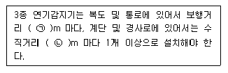
- ㉠ 15, ㉡ 10
- ㉠ 20, ㉡ 10
- ㉠ 30, ㉡ 15
- ㉠ 30, ㉡ 20
(정답률: 55%)
71. 비상방송설비의 배선에 대한 설치기준으로 틀린 것은?(오류 신고가 접수된 문제입니다. 반드시 정답과 해설을 확인하시기 바랍니다.)
- 배선은 다른 용도의 전선과 동일한 관, 덕트, 몰드 또는 풀박스 등에 설치할 것
- 전원회로의 배선은 옥내소화전설비의 화재안전기준에 따른 내화배선을 설치할 것
- 화재로 인하여 하나의 층의 확성기 또는 배선이 단락 또는 단선되어도 다른 층의 화재통보에 지장이 없도록 할 것
- 부속회로의 전로와 대지사이 및 배선상호간의 절연저항은 1경계구역마다 직류 250V 의 절연저항측정기를 사용하여 측정한 절연저항이 0.1MΩ 이상이 되도록 할 것
(정답률: 77%)
72. 무선통신보조설비의 설치기준으로 틀린 것은?
- 누설동축케이블 또는 동축케이블의 임피던스 50Ω 으로 한다.
- 누설동축케이블 및 공중선은 고압의 전로로부터 0.5m 이상 떨어진 위치에 설치한다.
- 무선기기 접속단자 중 지상에 설치하는 접속단자는 보행거리 300m 이내마다 설치한다.
- 누설동축케이블의 끝부분에는 무반사 종단저항을 견고하게 설치한다.
(정답률: 73%)
73. 누전경보기의 수신부의 절연된 충전부와 외함간의 절연저항은 DC 500V의 절연저항계로 측정하는 경우 몇 MΩ 이상이어야 하는가?
- 0.5
- 5
- 10
- 20
(정답률: 58%)
74. 지상 4층인 교육연구시설에 적응성이 없는 피난기구는?
- 완강기
- 구조대
- 피난교
- 미끄럼대
(정답률: 67%)
75. 대형피난구유도등의 설치장소가 아닌 것은?
- 위락시설
- 판매시설
- 지하철역사
- 아파트
(정답률: 70%)
76. 비상콘센트설비의 전원회로에서 하나의 전용회로에 설치하는 비상콘센트는 최대 몇 개 이하로 하여야 하는가?
- 2
- 3
- 10
- 20
(정답률: 84%)
77. 비상조명등의 설치제외 장소가 아닌 것은?
- 의원의 거실
- 경기장의 거실
- 의료시설의 거실
- 종교시설의 거실
(정답률: 53%)
78. 1개 층에 계단참이 4개 있을 경우 계단통로 유도등은 최소 몇 개 이상 설치해야 하는가?
- 1
- 2
- 3
- 4
(정답률: 63%)
79. 바닥면적이 450m2일 경우 단독경보형감지기의 최소 설치계수는?
- 1개
- 2개
- 3개
- 4개
(정답률: 79%)
80. 누전경보기의 정격전압이 몇 V를 넘는 기구의 금속제 외함에는 접지단자를 설치해야 하는가?
- 30V
- 60V
- 70V
- 100V
(정답률: 81%)